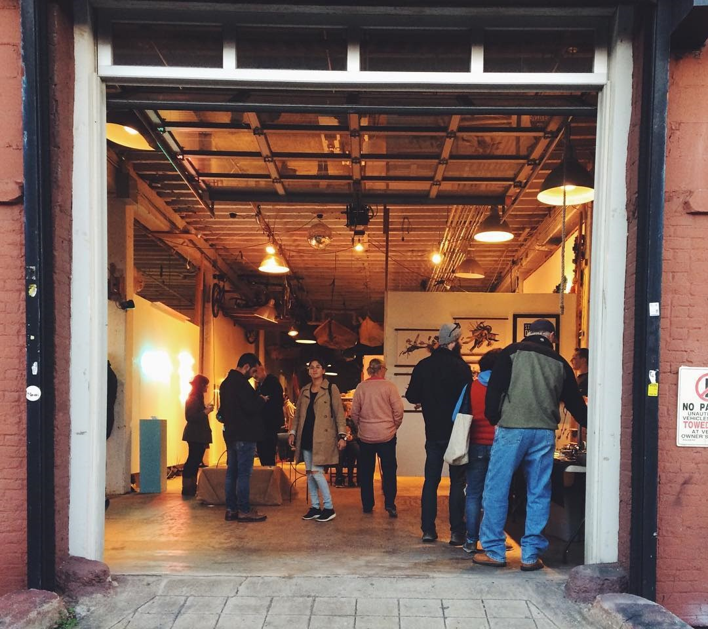
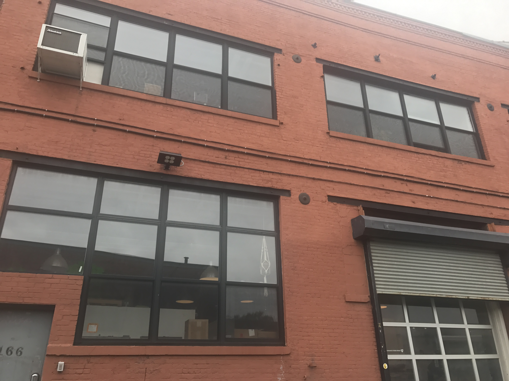
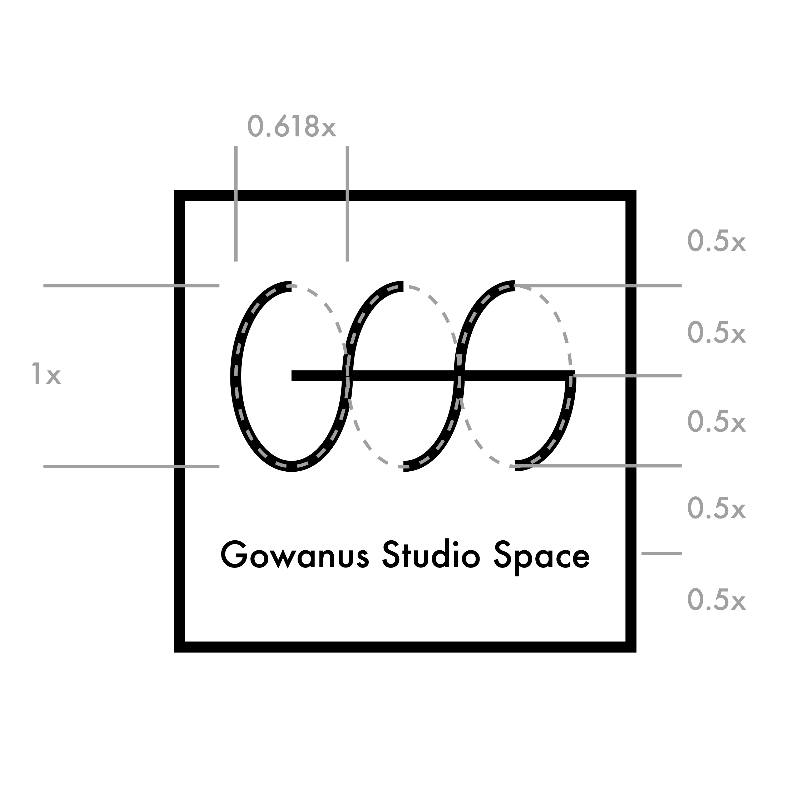

Gowanus Studio Space Logo
Branding, logo design
The Gowanus Studio Space is a studio space in Brooklyn that offers space, equipment and workshops to support artwork making. The task was to redesign the logo and identity for them. Their previous logo uses a simple sans serif font type saying "GSS" embedded in a hot pink colored heart shape. They explained that they want the design to suggest that they do serious work but are playful, and their core spirit is voluntary, unity, and open.


I tried to remain the simplicity in their previous design while offering more details and space to play around. Looking at their hard-core industrial environment I choose the black color and the round shape as underlying pattern in order to create a sense of uniformity and professionity. I played with the letters GSS so that they can be pictorial. The space between the letters are suitable for variations in colors and shapes, representing the studio's diversity and possibilities. An example of the door signs of their three workshop is shown below.
